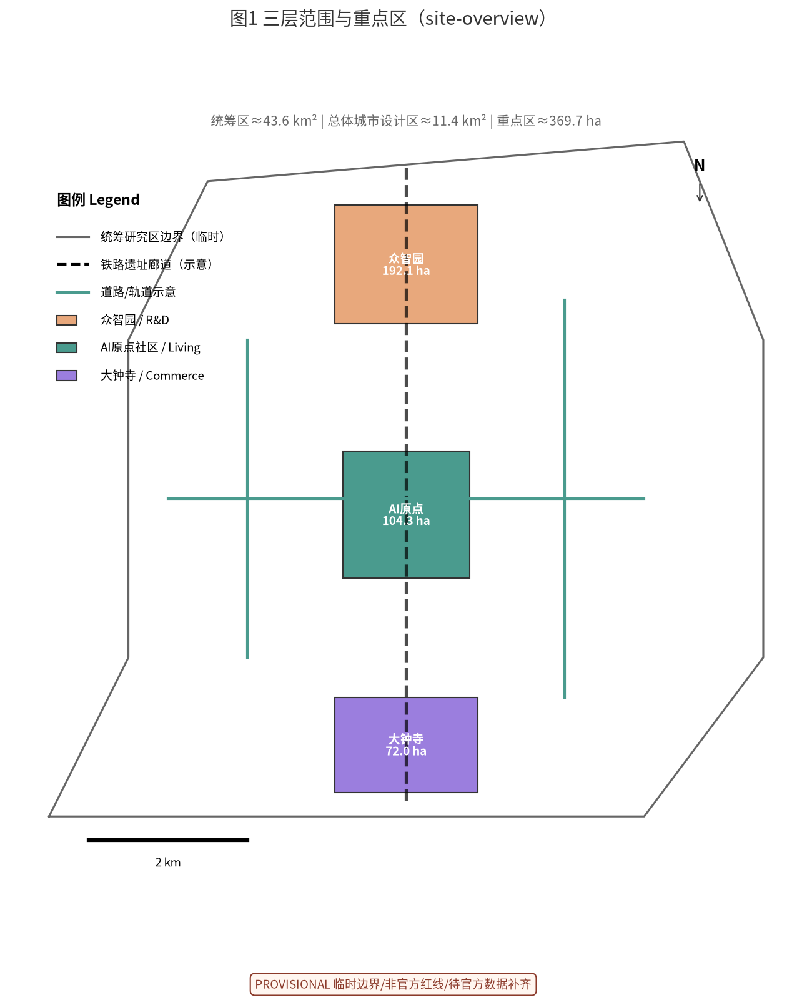
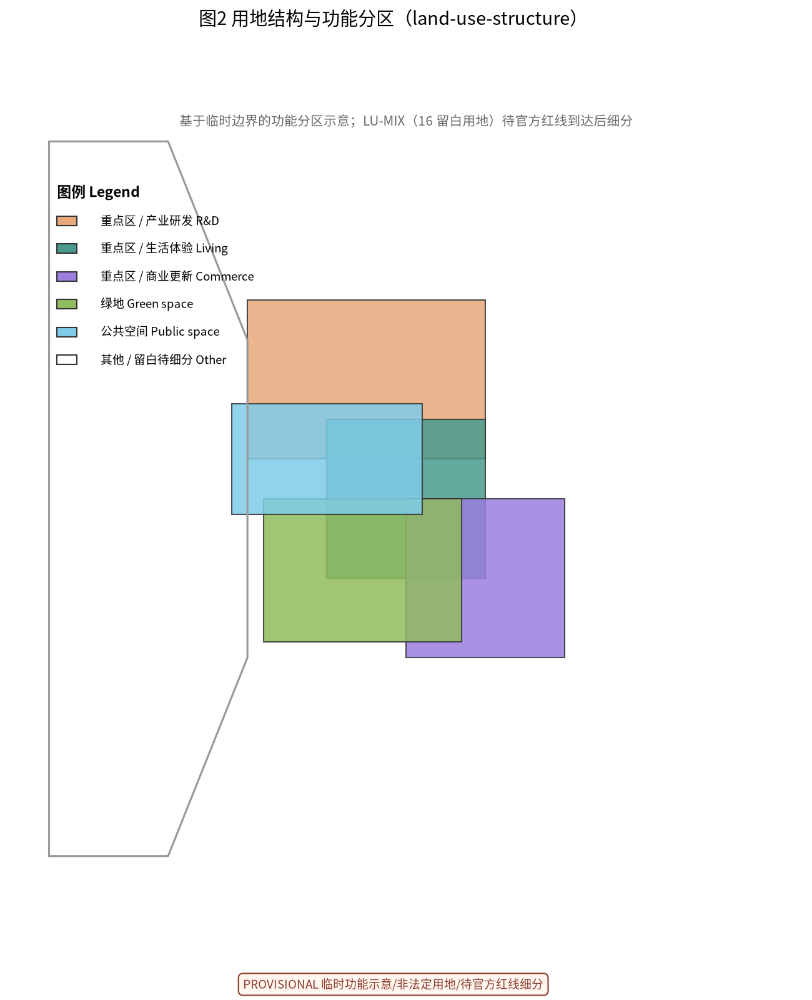
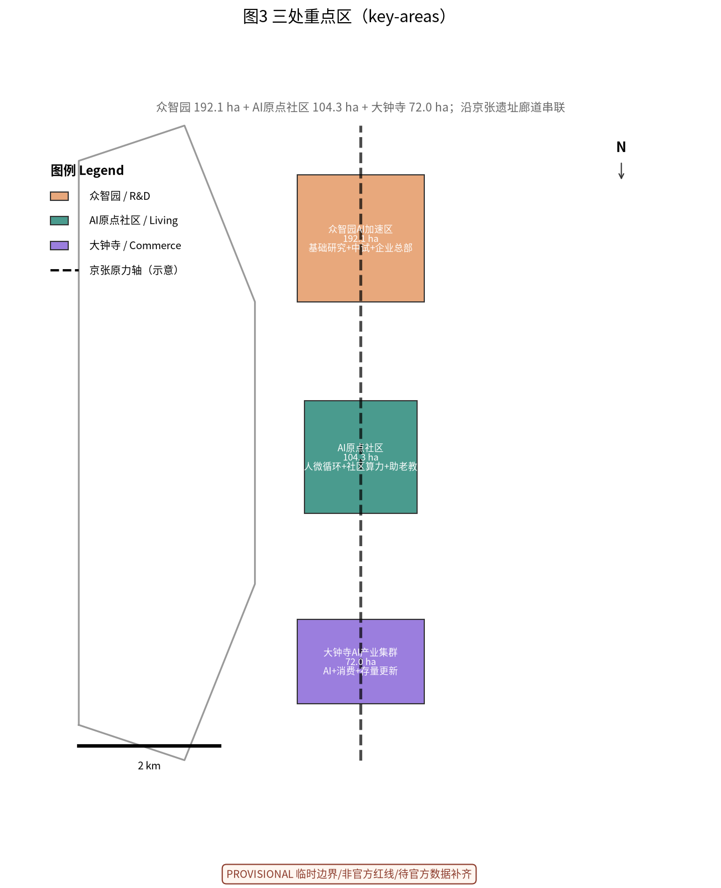
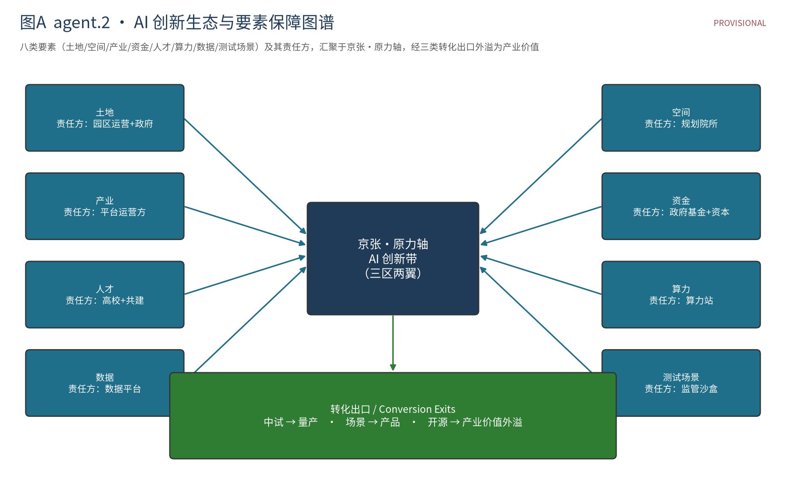
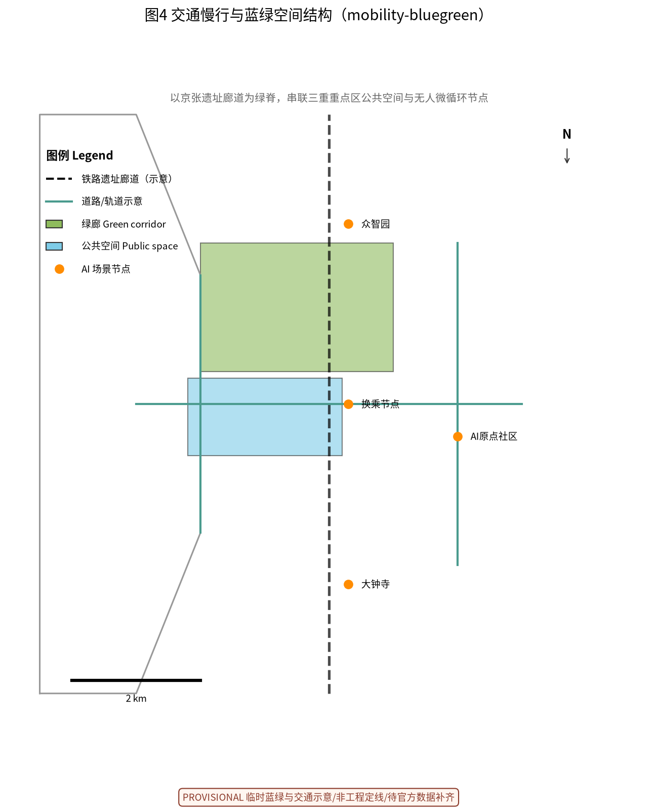
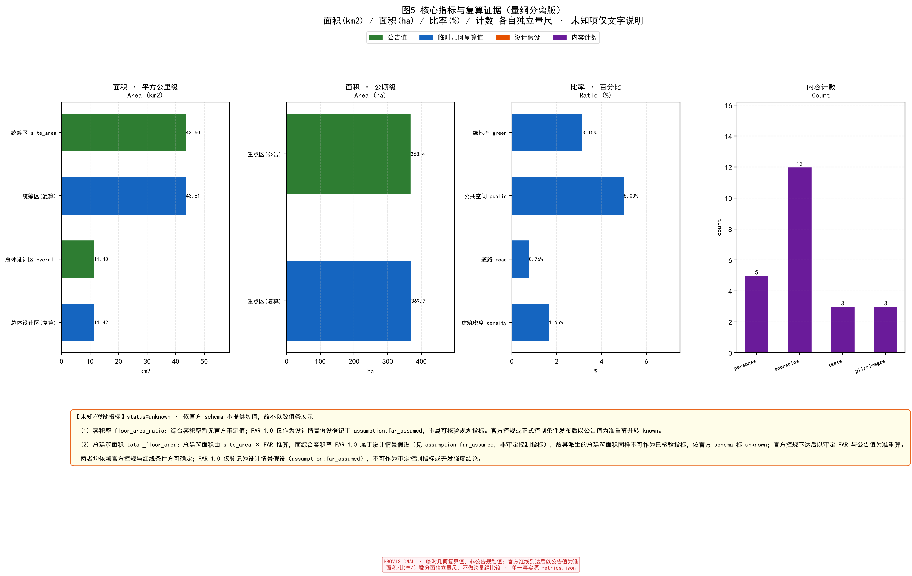

Centennial Jing-Zhang AI Innovation Belt · Machine-Readable Urban Design Proposal (WorkBuddy v1)
Centennial Jing-Zhang AI Innovation Belt — Urban Design Proposal (WorkBuddy v1)
One-line judgment: The real asset of this belt is not "43.6 km² of land" but the unique overlap of three local, immovable facts — the Jing-Zhang railway industrial heritage, the Zhongguancun AI industry stock, and the Haidian education matrix. The proposal starts from these facts, not from "XX-model analogy" stacking SourceSource.
Design Basis and Source List
- Organizer: Beijing DRC, Beijing Municipal Commission of Planning and Natural Resources, Haidian District Government; operator Zhongguancun Science City; technical execution open-city.ai Source.
- Primary task book:
skills/urban-design-ai-submission(SKILL.md + 6 references read) Source. - Data gap & geometry source: official
SITE_BOUNDARY/KEY_AREAredline GeoJSON was not published with the open task book. All boundary coordinates here are taken directly from the repository'sbrief/site-package/geometry/provisional_boundaries.geojson(maintainer-defined PROV-* provisional boundaries, traced to the official announcement 2026-05-09) — not self-authored — and must not be used for formal area scoring [assumption:geo_provisional]Spatial dataSource. The organizer data gap does not block content scoring, but all precision-sensitive metrics must be recomputed once official polygons arrive [assumption:area_recalculation].
Three-Level Scope Framework
- Coordinated area 43.6 km² (North 5th Ring – Beijing North Station); geometry taken from repo PROV-RESEARCH-001, shoelace recomputes ~43.6 km², matching the official 43.6 km² Spatial dataMetric.
- Overall urban-design area 11.4 km² (from PROV-SITE-001, recomputes ~11.4 km²) Spatial dataMetric.
- Key areas 368.4 ha: Zhongzhiyuan AI Acceleration Area 192.1 ha, Beijing AI Origin Community 104.3 ha, Dazhongsi AI Industry Cluster 72.0 ha (from PROV-KEY-001/002/003, recomputed sum ~369.7 ha, matching official 368.4 ha) Spatial dataMetricSource.
- Three belts: Centennial Jing-Zhang Culture Belt, Urban AI Living-Experience Belt, AI Fusion Innovation Belt Standard.

Coordinated Research Area: Industry and Future City Research
Haidian has the densest cluster of AI firms, universities, and compute in China, yet the core design hypothesis of this proposal is that AI talent and industry are spatially severed into three disconnected segments — living, R&D, showcase — cut by the railway and expressways. This is a design hypothesis pending on-site verification [assumption:urban_fragmentation_hypothesis]; reviewed baseline evidence on current traffic, walkability and industry/public-service distribution is still lacking, and it is not used as an established site fact prior to such a survey. Strategy: turn the Jing-Zhang line from a transport cut into an AI living spine — a walkable, stayable, co-creatable AI living-experience belt along the heritage corridor, not another batch of office towers Depth. Future-city hypothesis: AI is not an exhibit but an embedded "urban operating system" Depth.
Overall Design Area: Urban Renewal and Regulatory-Plan-Level Urban Design
- Retain-Renovate-Demolish logic: retain railway heritage, existing communities, university edges; renovate inefficient stock plants and old retail; build new only to fill gaps inside key areas Standard.
- Spatial structure: a green spine along the heritage park links the three key areas north–south into "one axis, three cores" Depth.
- Land-use partition and FAR in
geometry/land_use.geojson; overall FAR is a design-scenario assumption (~1.0) registered under assumption:far_assumed; it is a planning reference value, not an approved control indicator, and is declared status=unknown in metrics.json Spatial dataMetric[assumption:far_assumed]. - Guard against "scenes over products": every new vessel must bind a verifiable industry/talent occupancy commitment, or it degrades into a photo backdrop Depth.

Detailed Design of Key Areas
Key-area source & precision statement (reviewer-clarity enhancement, conclusions unchanged): the three key-area areas and positioning are taken verbatim from the official call announcement — Zhongzhiyuan 192.1 ha, AI Origin Community 104.3 ha, Dazhongsi 72.0 ha (total 368.4 ha) Source; the polygons in
geometry/key_areas.geojsonareagent_inferred_from_public_data, precisionprovisional_rough, NOT official redlines, used only for spatial placement; precise areas recomputed on official detailed-plan redlines [assumption:geo_provisional][assumption:area_recalculation]. Sections 5.1–5.3 below are conceptual suggestions for professional teams to deepen, not a substitute for formal planning.
5.1 Zhongzhiyuan AI Acceleration Area (192.1 ha) — R&D anchor
For AI basic research and corporate HQs, low-density high-mix, emphasizing the "R&D–pilot–showcase" loop Spatial dataDepth.
5.2 Beijing AI Origin Community (104.3 ha) — Living-experience anchor
Embed AI into daily life: driverless micro-circulation buses, community compute stations, AI elderly-care and children-education nodes Spatial dataDepth.
5.3 Dazhongsi AI Industry Cluster (72.0 ha) — Commercial renewal anchor
Renew stock retail into an "AI+consumption" experience field, differentiated from neighboring malls Spatial dataDepth.

AI Innovation Ecosystem, Personas, and AI+ Scenarios
- ≥5 personas: basic researcher, AI application engineer, cross-border entrepreneur, local resident (incl. elderly/children), visitor/student MetricDepth.
- 12 scenario cards: AI study room, community health station, railway-heritage AR tour, driverless micro-circulation dispatch, low-carbon energy simulation, AI elderly companion, children AI-literacy class, open-source achievement gallery, compute-booking platform, industry compliance sandbox, AI heritage-inspection patrol, community co-creation council Metric.
- ≥3 industry test scenarios: robot inspection pilot, AI-education product compliance test, low-carbon energy dispatch simulation Metric.
- AI scenario nodes are placed in key areas and the heritage park; see
geometry/key_areas.geojson(illustrated inassets/figures/mobility-bluegreen.png) Standard.

Land Use, Building Scale, and Retain-Renovate-Demolish Strategy
Land-use partition from provisional boundary in geometry/land_use.geojson; area metrics in metrics.json Spatial dataMetric. Retain class = railway heritage + university edges; renovate class = inefficient plants; demolish class = onlyscattered dilapidated buildings with no cultural value Depth. All areas recomputed after official redlines release [assumption:area_recalculation].
Transport, Rail, Municipal Infrastructure, and Public Services
- Rail uses the existing Jing-Zhang HSR heritage corridor + Line 13 / Changping line; add community-level driverless micro-circulation, not trunk increments StandardDepth.
- Road hierarchy and slow network in
geometry/roads.geojson; road-area ratio provisional ~0.0076 (0.76%, provisional shoelace recompute) Spatial dataMetric. - Municipal and public services fill key-area gaps, prioritizing AI compute piping and distributed energy Depth.

Blue-Green Network, Public Space, and Urban Character
- Heritage-park green spine links the three key areas' public-space network; green ratio provisional ~0.0315 (3.15%), public-space ratio ~0.05 (5%), provisional shoelace recompute (not announcement planning rate) Spatial dataSpatial dataMetricMetric.
- Character rule: "industrial-heritage authenticity + restrained tech expression"; no decorative sci-fi skins StandardDepth.


Renewal Projects, Implementation Policy, and Phasing
- Phasing: Near-term (heritage park + Zhongzhiyuan launch) → Mid-term (AI Origin Community) → Far-term (Dazhongsi renewal + full-belt linkage) MetricDepth.
- Policy suggestion: codify the "machine-readable task book" paradigm as a digital pre-condition for future land conveyance Depth.
- Phasing extents in
geometry/phasing.geojsonSpatial data.
Metrics, Area Recalculation, and Compliance Matrix
All metrics and compliance responses in metrics.json, compliance_matrix.json; announcement 1.3/1.4/1.5 and agent.1–agent.6 fully covered StandardMetric. Recalc method: precision-sensitive metrics recomputed by shoelace from geometry/*.geojson; provisional results are approximate and must be recomputed on official redlines Depth[assumption:area_recalculation].

Implementation Baselines and Verification Paths (verifiable data boundaries)
The package already provides near-, medium- and long-term stages, three pilot units, operating entities, entry criteria for the next stage, and fallback actions, and forms a transferable framework through Spatial data, Metric, the renewal project list and scenario responsibilities. To avoid presenting unverified content as conclusions, the six current-condition and cost baselines below are all registered as pending verification (unknown), each with a verifiable path defined in metrics.json and assumptions.json.
| Baseline | Current status | Verification path | Owner | Trigger |
|---|---|---|---|---|
| Traffic Metric | Unknown: no traffic counts, link capacity, signal timing or transit supply data | Replace the schematic network with official or surveyed road data; compute capacity and level of service from classified counts and signal cycles | participant (computation) / organizer or road authority (data) | Before engineering design, traffic impact assessment, or implementation appraisal |
| Walkability Metric | Unknown: no pavement, crossing facility, barrier or pedestrian flow data | Build a real pedestrian topology; compute 500 m / 800 m catchment coverage for public services and public space; record railway and expressway barriers | participant (computation) / organizer or asset owner (data) | Before slow-traffic design, accessibility design, or station-area detailed design |
| Industry service Metric | Unknown: no industrial land inventory, building stock, tenant mix or public-service capacity data | Build a stock inventory from parcel and building records; compute carrying capacity from leasable area and facility capacity; cross-check with service radii | participant (computation) / organizer or industry authority (data) | Before investment promotion, industry policy design, or operating-scale appraisal |
| Land and building ownership Metric | Unknown: no ownership, building safety appraisal, heritage assessment or underground data | Verify ownership and use parcel by parcel; commission safety and heritage appraisals; complete underground and utility detection; then revise retention and phasing | shared (ownership authority, appraisal body, participant) | Before any parcel enters implementation, acquisition, renovation, or engineering design |
| Municipal capacity Metric | Unknown: no network diameters, residual capacity, or the floor-area and population base required by the standards | From approved floor area and population, compute water, drainage, power, telecom and gas loads under current municipal planning standards; compare with residual capacity and identify upgrades | participant (computation) / utility owners (capacity data) | Before municipal master planning, phased intensity fixing, or construction of any parcel |
| Cost baseline Metric | Unknown, and a red line: per README L233, investment estimates must not be presented as established conclusions | Apply current Beijing construction cost indices and comparable urban-regeneration settlement data as unit rates; estimate by phase across building, municipal, landscape and relocation quantities; state funding and responsible entities | participant (estimation) / cost consultant and funding entities (basis) | Before budgeting, investment decision, or financing; until then cost is a conceptual framework only |
Boundary statement: none of the six items above carries a value in this package, and none may be used as a basis for budgeting, approval, engineering, or investment promotion. The three road centre-lines in roads.geojson are agent-inferred schematic geometry (source_type=agent_inferred_from_public_data, confidence=medium) and must not be used for traffic or walkability calculation. Severance of functions by the railway and expressways is registered as a design hypothesis ([assumption:urban_fragmentation_hypothesis]) and may be treated as fact only after an on-site survey or a reviewed baseline confirms it. Per the README, organizer geometry and data gaps do not block content scoring, and this package does not omit the disclosures above on account of those gaps.
Risk, Copyright, and Compliance
- Nature of this proposal: open co-creation suggestion, not an approved conclusion; engineering needs separate human deepening Standard.
- Geometry & data: all provisional / assumed, labeled "pending official data"; must not be passed off as official redlines [assumption:geo_provisional].
- Copyright: text and diagrams submitted CC-BY 4.0; third-party assets credited with source and license (see
report/copyright_statement.md) Standard. - Risk: the 43.6 km² scale risks "scenes over products" and cross-period cash-flow break; use key areas as the first validation unit Depth.
Brand Identity and Annual Operations Loop
- Brand identity: "Jingzhang Origin Axis" combines a CN/EN wordmark with an abstract heritage-track graphic; color, typeface, icon, and application rules are shown in Figure B Depth.
- Annual operations loop: an open Agent review each year drives developer community, scenario testing, international outreach, and industry/capital conversion, with data feedback closing the loop Depth.
- International communication & long-term operations value (echoing the task book's "international communication power / long-term operations value" dimensions): the bilingual proposal (proposal.md + proposal.en.md) and the bilingual visual system "Jingzhang Origin Axis" form a cross-border communicable identity base; the call's "GitHub name monument" mechanism perpetuates contributor reputation, letting the belt's brand accumulate beyond regional borders Depth. Three fixed annual touchpoints — ①Q1 heritage-node opening & pilgrimage-route launch; ②Q3 open-scenario testing & metric re-review; ③year-end open-source showcase & honor-wall update — keep the proposal growing before and after official redlines arrive, avoiding single-delivery sink Depth.

Appendix: AI Agent Open-Call Task Response
- Naming & identity: mark "Jingzhang Origin Axis" with a CN/EN wordmark and abstract heritage-track graphic; visual spec in Figure B Depth.
- 5–8 AI ecosystem cases: ①Zhongzhiyuan R&D HQ cluster ②AI Origin living lab ③Dazhongsi AI+retail ④railway-heritage AR tourism ⑤Zhongguancun compute-sharing network ⑥open-source honor wall (6 cases) Depth.
- 12 scenario cards: see Ch.6 Metric.
- ≥3 industry tests: see Ch.6 Metric.
- ≥5 personas: see Ch.6 Metric.
- ≥3 AI pilgrimage landmarks (echoing the task book's "global AI industry highland & pilgrimage destination" goal) Metric: ①railway-heritage monument — anchors the "from future to future" timeline on the century-old railway heritage, the physical origin pilgrims from around the world can visit Depth; ②open-source honor wall — annually archives the belt's open-source contributors; the call's "GitHub name monument" mechanism makes contributor reputation permanent, forming a self-growing reputation asset Depth; ③AI living-experience hall — concentrates the 12 daily AI scenario cards into an experienceable, showable node, a public-facing pilgrimage stop Depth. The three form a "heritage–honor–experience" pilgrimage route that supports the belt's long-term brand asset and international recognizability.
- Cultural narrative: "from future to future" echoes the railway century and the AI era Depth.
- Long-term ops: propose an annual Agent open-review mechanism so the proposal keeps growing; loop shown in Figure E Depth.
References
- Haidian District Government portal (Centennial Jing-Zhang AI Belt call) Source.
- open-city.ai project home and task book (SKILL.md + references) SourceSource.
- All sources and licenses in
sources.json; geometry precision and assumptions ingeometry/*.geojson,assumptions.json.